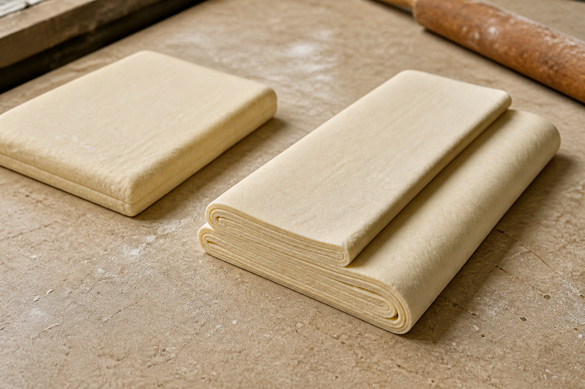
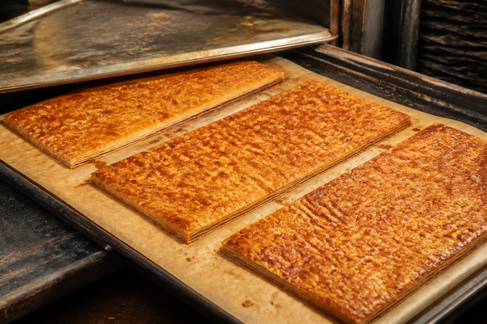
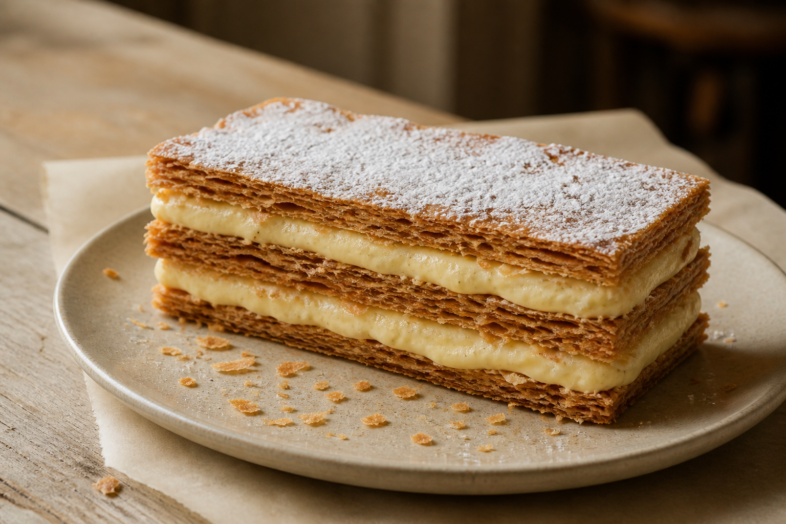

Minimirok · Chapter 01 · Basic Aesthetics of World Bakery
No. 09 · France Finale
밀푀유를
쌓는 법Mille-feuille · Three sheets, two creams
밀푀유의 기본은 세 장의 페이스트리와 그 사이를 채우는 두 층의 바닐라 크림이다. 같은 폭과 두께로 반복되는 직선, 짙게 구운 갈색과 밝은 크림색의 대비가 형태를 만든다.



Dough · butter · pressure · cream · three and two
Food mechanics · 03
반죽과 버터가 반복해서 접히며 얇은 층을 만든다. 오븐에서는 수분이 수증기로 바뀌어 각 층을 벌린다.
fold + pressure+ heat
위 철판은 높이를 고르게 잡고, 마지막 캐러멜화는 표면을 단단하게 만들어 크림 사이에서도 바삭함을 유지한다.
세 장과 두 층
포크가 닿으면 윗면이 먼저 얇게 깨지고 크림이 압력을 받아낸다. 바삭한 조각과 차갑고 부드러운 커스터드를 한입에 먹을 때 밀푀유의 식감이 완성된다. 화려한 장식보다 층의 균형이 중요한 케이크다.